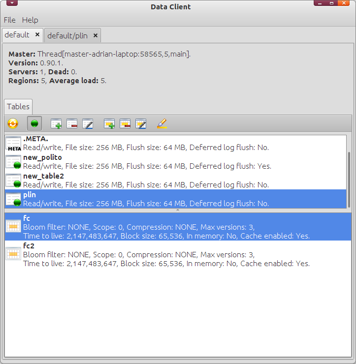
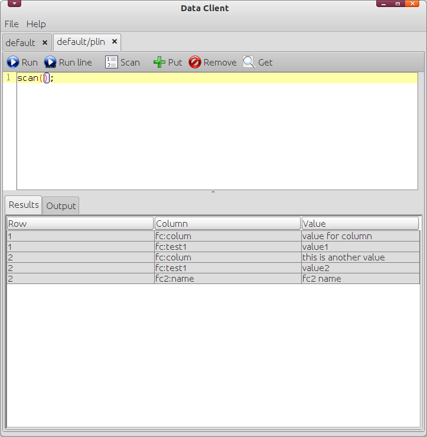

Data Client is a graphical user interface for HBase with administrative and query functions.
Features
- Connections management. Administer all the HBase connections easily. Data Client can create, edit and connect to several HBase clusters.
- Administration capabilities. Administer your HBase table and family column properties. With Data Client you can create new HBase tables update its properties, enable and disable. The same with family columns you can browse, edit, modifiy and delete graphicaly with Data Client.
- Query functions. Data Client has basic query functions to scan data in tables, create, update and delete data. With the included functions to query HBase data and the scripting capabilities you have all the flexibility to manage HBase data.
Screenshots

Administer HBase tables.

Query HBase tables.
Download
You can download the latest binaries of this project in
Data Client 0.90.1. To run Data Client, uncompress the binaries package, go to that folder and execute:
$ java -jar dataclient.jar
You can download this project in either
zip or
tar formats.
You can also clone the project with Git
by running:
$ git clone git://github.com/adrianromero/dataclient
License
Data Client is published under the terms of the licence GPL v3.